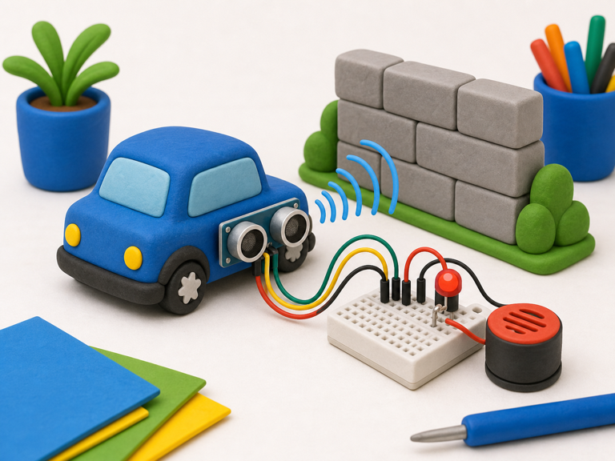
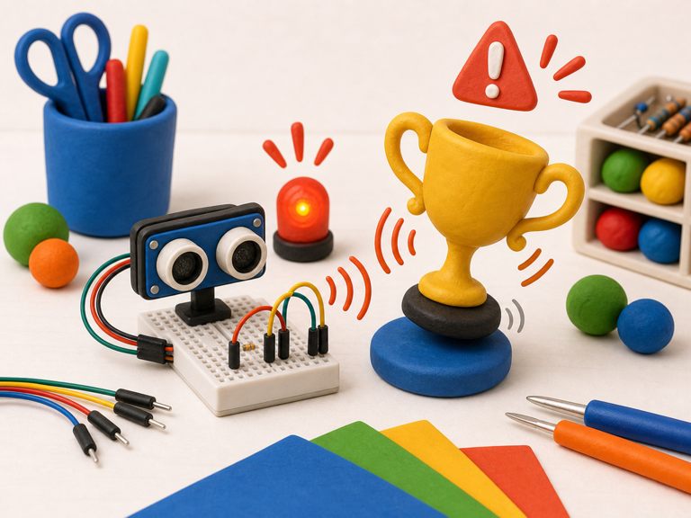

Car reversing sensor
DetectCar distance to wall
->
DecideWall is too close
->
DoBeep faster
An ultrasonic distance sensor measures how far away something is without touching it.
It sends out a tiny burst of sound and listens for the echo bouncing back.
Your projects can use distance to react when hands, walls, boxes, or mysterious objects move closer.


from gpiozero import DistanceSensor
sensor = DistanceSensor(
echo=18,
trigger=17
)
distance = sensor.distancefrom picozero import DistanceSensor
sensor = DistanceSensor(
echo=3,
trigger=2
)
distance = sensor.distancedistance when your project needs to react to nearby things.